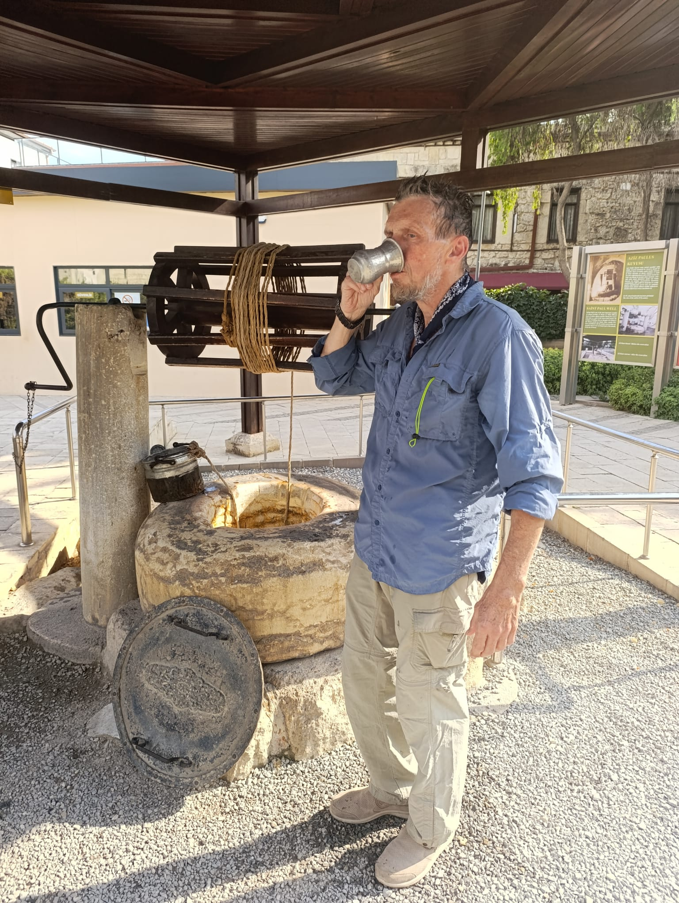
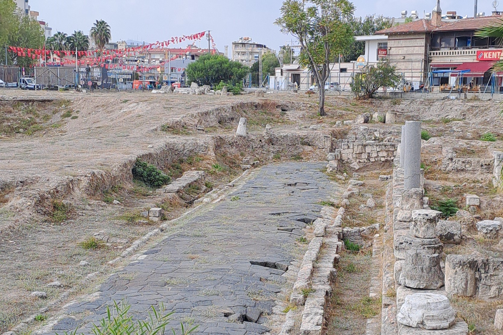

Духовно‑историческое путешествие к дому Апостола Павла в Тарсе — современном Тарсусе.
Духовно‑историческое путешествие к музею на месте раскопок дома, в котором родился и вырос Святой Апостол Павел — реальный человек, своими проповедями изменивший мир. Его слова вошли в основу Нового Завета — «Послания святого апостола Павла». Это место, где дыхание истории соединяется с тишиной молитвы. Сюда совершают паломничества христиане так же, как и тысячи лет назад. Немой базальт римских улиц свидетельствует о ничтожности сущего и вечности истинного.
На территории сохранился древний колодец, вода из которого доступна для питья. Паломники считают её святой и традиция омовлятся и утолять жажду этой водой продолжается веками.
Древнеримская дорога‑музей
Рядом открыта для осмотра древнеримская дорога шириной 6 метров имеющая ливневые стоки, развлины и колоннада, превращённая в музей под открытым небом.
Соседство с ней подчёркивает значимое положение семьи Павла в обществе и роль Тарса как культурного центра античности.
Древняя церковь Святого Апостола Павла
Посещение церкви Святого Апостола Павла, воздвигнутой для молитв паломников во времена Византии. Атмосфера храма усиливает духовное восприятие истории.Ворота Клеопатры
Завершающий акцент городской части маршрута — осмотр Ворот Клеопатры, через которые царица прошла на встречу с Марком Антонием. Эти ворота — живое свидетельство переплетения библейской и античной истории, добавляющее величие и драматизм путешествию.Пещера «Семи спящих» (Эсхаб‑ы Кехв)
Затем маршрут ведёт к пещере «Семи спящих» — месту, где, по преданию, юноши нашли спасение от гонений и проспали сквозь десятки лет. Это чудо не вошло в христианский канон, но сохранилось в апокрифах и получило отражение в Коране (Сура 18, «Аль‑Кахф»), где почитается как знамение Божьей защиты. Паломники приходят сюда с молитвами о защите от врагов и исцелении от болезней, и за столетия камни пещеры отполировались руками верующих. Святыня свидетельствует о редком переплетении авраамических религий: память о чуде живёт в разных традициях и объединяет верующих в уважении к общим корням.Не готово
Подробное описание маршрутов...